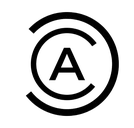

Sistemas sob medida · Consultoria de gestão
Construído para você Rodando sem você
A empresa cresceu e ainda depende de você.
- 1O cliente pede
- 2O sistema registra
- 3A proposta sai
- 4A equipe recebe
- 5O dinheiro entra
Sistemas sob medida tiram da mão da equipe o pedido, o documento e a cobrança. A Consultoria de gestão mostra quanto sobra e por onde a IA entra na sua empresa.
Quero conversarA conversa de diagnóstico não custa nada. Você sai dela sabendo o que vale fazer, mesmo que não feche com a gente.
Projetos que a gente já construiu


“A GenesisKore tornou nossos processos na AUTH muito mais rápidos, completos e seguros.”
- Horas poupadas
- +47 mil
- Projetos entregues
- +8
- Setores atendidos
- +4
- Opções em cada proposta
- 3
O que muda no seu dia
Onde o tempo da sua empresa vai embora
Se alguma destas cenas é do seu dia a dia, tem hora de trabalho sendo paga para fazer o que um sistema faz sozinho.
-
Hoje
Avisar cliente por cliente que o pedido saiu
Com a GenesisKore
O aviso, o andamento do pedido e o documento chegam ao cliente sozinhos, por e-mail ou WhatsApp, sem ninguém parar o que está fazendo.
-
Hoje
Copiar dado de uma planilha para outra
Com a GenesisKore
A informação entra uma vez e aparece em todo lugar que precisa.
-
Hoje
Montar nota, recibo, certificado ou relatório à mão
Com a GenesisKore
O documento sai pronto, com a sua marca, no momento certo.
-
Hoje
Descobrir só no fim do mês como o caixa ficou
Com a GenesisKore
Os números do negócio numa tela só, atualizados enquanto a empresa trabalha.
-
Hoje
Você sabe quanto vende, mas não sabe quanto sobra de cada produto
Com a Consultoria de gestão
A margem de cada produto e cliente na mesa, e o caixa dos próximos meses. Ver a Consultoria
Sistemas sob medida
Seis sistemas, cada um para um problema.
Seis exemplos, de setores diferentes. Todo sistema é feito para uma empresa só: o seu pode juntar dois deles ou não se parecer com nenhum.
-
Distribuidora e atacadoA gente constrói
Pedido digital ligado à nota
“O vendedor manda o pedido no WhatsApp e alguém digita tudo de novo.”
O pedido entra uma vez, pelo celular do vendedor ou pelo próprio cliente, e segue para o emissor de nota que a empresa já usa.
Ver pedidos B2B -
Quem vende a prazoRoda na GenesisKore
Cobrança que anda sozinha
“Cobrar depende de alguém lembrar. Quando lembra, já venceu faz tempo.”
Aviso antes do vencimento, lembrete depois dele e baixa quando o pagamento cai. A sua equipe só entra no caso que pede conversa.
Ver cobrança automática -
Indústria e distribuição de alimentosJá construído
Lucro de cada nota fiscal
“Eu sei quanto vendi no mês. Quanto sobrou de cada venda, não sei.”
O sistema lê as notas fiscais e mostra o lucro de cada venda, por produto e por ponto de venda.
Ver lucro por produto -
Serviço e varejo de alto valorEm operação na AUTH
Documento que sai pronto
“Cada certificado é montado à mão, peça por peça.”
Certificado, laudo ou recibo gerado na hora em que o trabalho termina, com QR code, e entregue ao cliente sem ninguém montar.
Ver documento automático -
Contabilidade e advocaciaA gente constrói
Documentos do cliente sem correr atrás
“Todo mês é a mesma novela: pedir o documento, lembrar, pedir de novo.”
O cliente recebe a lista do que falta, envia por um link e é lembrado até completar. O escritório vê quem está em dia.
Ver para escritório -
Loja de luxo e joalheriaA gente constrói
Ficha da cliente e peça fora da vitrine
“A vendedora sabe de cabeça o que cada cliente gosta. Quando ela sai, a informação vai junto.”
O histórico de cada cliente e o paradeiro de cada peça que saiu em consignação ou para ajuste, num lugar só.
Ver para joalheria
Não achou o seu problema aqui? Conte na conversa. Quase todo sistema que a gente fez começou de um problema que não estava em lista nenhuma.
Consultoria de gestão
Decidir com número, e não no feeling.
Para o dono que já vende bem e não sabe quanto sobra. A Consultoria olha os números, os processos e o mercado da sua empresa e entrega o que fazer, em ordem de impacto.
-
O produto principal da Consultoria
Consultoria de IA para o seu negócio
“Todo mundo fala de IA. Eu não sei o que ela faria aqui dentro.”
A gente mostra quais tarefas a IA assume na sua empresa e deixa ela configurada. Em geral, três semanas.
A gente entende como a sua empresa trabalha, mostra quais tarefas a IA pode assumir e deixa ela configurada com o jeito da empresa. Funciona com Claude, ChatGPT, Gemini ou o Copilot do Office. Se a ferramenta que você já paga resolve, a gente configura essa e não indica outra.
Em geral, três semanas. A tarefa que pedir sistema aparece no mapa, e vira proposta à parte só se você quiser.
- Entender a empresa. A semana de cada área vira uma lista de tarefas: quem faz, quanto tempo leva, em que ferramenta.
- Onde a IA entra. Cada tarefa ganha um destino: IA de prateleira, automação simples ou sistema sob medida. E a lista do que não comprar.
- O kit pronto. A IA montada e testada na conta da empresa.
- Aula e retorno. Duas horas ao vivo com a equipe, nas tarefas reais da semana. Trinta dias depois, a gente volta para medir o que pegou.
-
Contabilidade Gerencial
“O contador manda o balanço e o dono não consegue decidir nada com ele. O mês fecha pelo extrato do banco.”
O resultado do mês por linha de negócio, todo mês, do mesmo jeito. Junto com o seu contador, nunca no lugar dele.
-
Análise Financeira
“Eu sei vender. O que eu não sei é se estou ganhando dinheiro.”
Onde a margem vaza, em reais, por produto, cliente e canal, e o caixa dos próximos meses.
-
Análise de Processos
“A empresa não anda sem mim.”
Os processos que travam, redesenhados e escritos, com quem decide o quê.
-
Pesquisa e Mapeamento de Mercado
“Quero abrir uma linha nova, ou ir para outra cidade, e não sei se tem mercado.”
O tamanho do mercado com a conta aberta, quem compra e onde tem espaço.
-
Análise Macroeconômica
“Os juros subiram, o dólar subiu, e eu não sei o que isso faz com a minha empresa.”
Juros, câmbio, inflação e crédito traduzidos em venda, custo e caixa, com um plano para cada cenário.
-
Experiência do Cliente
“O cliente compra uma vez e some.”
Onde o cliente desiste, reclama ou deixa de voltar, e o que mudar primeiro.
Quem faz o diagnóstico senta à mesa com quem constrói o sistema.
Faça a conta
Quanto custa deixar como está
Arraste e veja quanto a sua empresa paga por ano para gente fazer tarefa que poderia rodar sozinha.
Estimativa por ano
Dinheiro indo para tarefa repetitiva
R$ 76.313
Horas que podiam ir para vender e atender
2.640h
Horas por dia × 22 dias × 12 meses. O custo de um funcionário CLT entra como 1,85 vez o salário (INSS, FGTS, 13º e férias, de onde vem a conta). O número exato da sua empresa sai na conversa de diagnóstico.
Quero o número da minha empresaResultados
Quatro empresas, antes e depois.
Alguns exemplos, escolhidos entre os projetos que a gente já entregou, em setores bem diferentes. Cada um feito do zero para o jeito daquela empresa.
Autenticação de peças de luxo
AUTH: a operação inteira num sistema só
500%
mais capacidade de avaliação, sem contratar mais gente.
- A peça entra na fila, com prazo
- Passa pelo checklist do avaliador
- O certificado sai sozinho
- Quem compra confere pelo celular
Antes
Cada certificado de autenticidade era montado à mão, peça por peça. Com mais pedidos chegando, a conta não fechava.
O que fizemos
Primeiro, o certificado passou a sair sozinho: o avaliador preenche os dados e o cliente recebe o documento pronto. Depois veio a plataforma completa, com duas portas: uma para a equipe trabalhar, outra para a loja e o cliente acompanharem.
O que cada pessoa usa na plataforma
- Para a equipe Fila organizada pelo prazo de cada peça, fotos e checklist da análise, certificado com QR code, e clientes, financeiro e metas na mesma tela. Cada pessoa vê só o que a função dela pede.
- Para a loja e o cliente Mandam a peça, acompanham cada etapa com prazo e baixam o certificado sem precisar perguntar a ninguém.
- Para quem compra a peça O QR do certificado abre o documento daquela peça, para conferir se é a mesma.
- Sempre de olho A cada 5 minutos o sistema testa se a equipe consegue trabalhar, e se conserta sozinho nas falhas que a gente já conhece.
A AUTH contratou a GenesisKore três vezes: o emissor de certificados, o sistema da equipe de autenticação e, agora, a plataforma geral.
“Após o Emissor de Certificados AUTH, os contatamos novamente para o desenvolvimento do sistema interno operacional da equipe de autenticação e sistema de administração geral, onde o resultado seguiu a mesma lógica, excelência do total.”
“E no momento, estão trabalhando no desenvolvimento da plataforma geral de autenticações da AUTH, após mostrarem responsabilidade, comprometimento e expertise técnica nos projetos propostos.”
Agro e pecuária
Fazenda CCA: a fazenda inteira num aplicativo só
Zero
dificuldade para a equipe: tudo pelo celular, direto do pasto.
Antes
As vendas de gado eram anotadas em bloquinho, que se perdia na caminhonete. O dono não enxergava o caixa.
O que fizemos
Um sistema de gestão completo, feito para quem está no campo. Num aplicativo só, simples o bastante para o peão usar e preencher, a fazenda cuida de tudo o que antes ficava espalhado.
- Pastos e lotes O manejo de cada pasto e de cada lote registrado na hora, por quem está lá.
- Entrada e saída Tudo o que entra e sai da fazenda, registrado com data e histórico.
- Insumos, veículos e maquinário O que tem, o que foi usado e cada máquina, no mesmo lugar.
- Por áudio, foto ou texto Quem prefere não abrir o aplicativo manda pelo celular. O sistema entende, organiza e gera o recibo em PDF na hora.
- Relatório pronto Todo mês, semestre e ano sai o relatório completo do caixa.
Logística e frotas
Rastro: frota e pneus sob controle
Zero
trabalho manual entre a medição e a decisão de cada pneu.
- Cada pneu no seu lugar no caminhão
- A medição pelo celular, um pneu de cada vez
- A recapagem, do envio até a volta
- O que a recapagem evitou de compra no mês
Antes
Centenas de pneus controlados no olho, sem histórico. Resultado: troca antes da hora e pneu falhando na estrada.
O que fizemos
Um aplicativo para a Rastro cuidar da frota de caminhões e do estoque de pneus dos clientes dela, que são transportadoras. Um controle muito mais fino, e rastreável do começo ao fim.
- Cada pneu com história Do estoque ao caminhão: em qual veículo está, quanto rodou e como está o desgaste.
- Medição pelo celular O técnico mede, e o sistema calcula o desgaste e guarda tudo numa ficha em PDF.
- Decisão pronta Todo mês chega o relatório dizendo o que trocar e o que rodiziar.
Gráfica e comunicação visual
GMF Gráfica: cada pedido no seu passo
1 link
para o cliente acompanhar o próprio pedido, sem ligar para a gráfica.
- Cada pedido no seu passo, do orçamento à entrega
- O cliente acompanha o pedido por um link
- Prazo, arte e pagamento num lugar só
- O que entra no caixa nos próximos 30 dias
Antes
Pedido de gráfica passa por orçamento, sinal, arte, revisão com o cliente, impressão e acabamento. Espalhado entre WhatsApp e papel, ninguém sabe em que passo cada um está, e o cliente liga para perguntar.
O que fizemos
Construímos o sistema de pedidos da GMF Gráfica Rápida, do jeito que uma gráfica trabalha. Comercial, arte, produção e financeiro olham o mesmo pedido, cada um na sua parte.
- Quadro de pedidos Cada pedido anda por quinze passos, do orçamento à entrega, e o quadro mostra em qual está, com a prioridade e o prazo.
- Cliente acompanha por link O cliente recebe um endereço e vê sozinho em que passo está o pedido dele.
- Caixa dos próximos 30 dias O que entra e o que sai nas próximas semanas, a partir dos pedidos e dos gastos lançados.
Nossa própria operação
GenesisKore: a gente usa o que vende
1 tela
para projetos, clientes, caixa e marketing da empresa inteira.
- A semana inteira na primeira tela
- A prospecção mandando 100 emails por dia
- O funil com o método de venda
- O cronograma que o cliente abre por link
- Os posts saindo na hora marcada
Antes
Cronograma de projeto em arquivo solto, lead numa planilha, contrato anotado em texto e o caixa só no extrato do banco. Para saber como a empresa estava, alguém tinha de juntar tudo à mão.
O que fizemos
Construímos para nós o mesmo tipo de sistema que entregamos para os clientes. É nele que testamos primeiro muita coisa que depois vai para quem contrata a gente.
- Cliente acompanha sozinho Cada projeto tem um link próprio. O cliente abre e vê o que já foi entregue e o que vem em seguida, sem pedir atualização.
- Lead atendido na hora Quem preenche o formulário do site cai direto na plataforma, com um resumo do pedido e a primeira mensagem de WhatsApp pronta para mandar.
- Caixa sem surpresa Contratos, cobranças e extrato do banco num lugar só, com a previsão do caixa dos próximos três meses.
- Cada um vê o que precisa Sócio vê tudo. Quem trabalha num projeto vê só aquele projeto, sem nenhum valor em dinheiro.
- Marketing que se adianta Todo dia chega um post e os stories do Instagram no padrão da marca, prontos para revisar e publicar.
- Aviso quando algo para Cada automação bate ponto. Se uma parar, a tela inicial mostra qual foi.
Quem usa conta
O que os clientes dizem
Por partes e sem complicação
Do primeiro papo ao sistema funcionando
O prazo de cada parte vem escrito na proposta, junto com o preço. E a parte que fica com você é pequena.
-
01
Conversa de diagnóstico
Você conta como o trabalho acontece hoje. A gente mostra onde está o desperdício e diz o que vale automatizar. E o que não vale.
Sua parteContar como é hoje. A conversa não custa nada.
-
02
Proposta com preço fechado
O que vai ser feito, em quanto tempo e por quanto, em três opções. Você escolhe sem ter pago nada antes.
Sua parteEscolher uma das opções.
-
03
A primeira parte já em uso
Não precisa esperar tudo ficar pronto. O sistema entra em uso por partes, começando pela que mais pesa, e sua equipe sente a diferença desde a primeira.
Sua parteUsar e dizer o que ajustar.
-
04
A gente continua junto
Depois que o sistema entra no ar, a gente acompanha, ajusta e corrige. Se algo falhar, o próprio sistema avisa a nossa equipe.
Sua parteNenhuma. Quem fica de olho é a gente.
Sem surpresa
Sem surpresa no contrato
-
Preço fechado antes de começar
Valor e prazo vêm escritos na proposta. Você só decide depois de ver os dois.
-
Nada sobre o seu faturamento
Sem porcentagem e sem taxa escondida. A mensalidade cobre a hospedagem, a inteligência artificial e o nosso acompanhamento.
-
Seus dados, só seus
Cada cliente tem o próprio banco de dados, separado dos outros. Cada pessoa da sua equipe vê só o que a função dela pede. Tudo dentro da LGPD.
-
Aviso antes de virar problema
Quando algo falha, o sistema registra e avisa a nossa equipe na hora.
Antes de falar com a gente
Perguntas frequentes
Quanto custa?
Depende do tamanho do trabalho, e por isso não existe pacote pronto. O preço vem fechado, em três opções, depois do diagnóstico, e a conversa de diagnóstico não custa nada.
Quanto tempo leva?
Depende do que vai ser feito, e por isso o prazo vem escrito na proposta, junto com o preço. O sistema entra em uso por partes, começando pela que mais pesa: cada uma já funciona antes da próxima.
E se não funcionar do jeito combinado?
A gente corrige. A proposta diz por escrito o que o sistema vai fazer, cada parte entra em uso antes da próxima, e o que não fizer o que está escrito é corrigido. Depois do ar, as correções estão na mensalidade.
Minha empresa é pequena demais?
Depende da tarefa, não do tamanho. Se alguma tarefa repetitiva come horas da sua equipe toda semana, vale conversar. Se não come, a gente fala isso no diagnóstico.
E se o sistema que eu já uso resolve?
Aí a gente diz. Se o Bling, o Omie ou a ferramenta que você já paga dá conta, você sai do diagnóstico sabendo disso, sem proposta nenhuma.
Minha equipe vai ter de aprender um sistema novo?
Só se valer a pena. Muitas vezes a automação trabalha por trás do que vocês já usam, como WhatsApp, e-mail e planilha. Quando tem tela nova, ela é feita para o trabalho daquela pessoa e abre no celular.
E se der problema depois?
O sistema registra o erro e avisa a nossa equipe na hora. Na AUTH, ele se testa a cada 5 minutos e se recupera sozinho das falhas conhecidas. O acompanhamento depois do ar faz parte da mensalidade.
Preciso entender de tecnologia?
Não. Você explica como o seu negócio funciona, do seu jeito. A parte técnica é com a gente.
Qual a diferença entre a Consultoria e os Sistemas?
Os Sistemas sob medida tiram da equipe a tarefa que se repete todo dia. A Consultoria de gestão dá ao dono o número para decidir: margem, caixa, processo, mercado. Na conversa a gente diz qual dos dois faz sentido, ou se nenhum.
A Consultoria substitui o meu contador?
Não. O contador cuida do fisco: escrituração, imposto e obrigações. A Consultoria transforma esses números em decisão e trabalha junto com ele.
Preciso contratar os dois?
Não. Cada um é contratado sozinho. Quando a análise mostra que um sistema resolve parte do problema, a gente fala, e a decisão é sua.
O que é a Consultoria de IA?
É o produto principal da Consultoria: a gente mostra quais tarefas a IA pode assumir, entrega a IA configurada com o jeito da empresa e dá uma aula ao vivo para a equipe, com um retorno 30 dias depois. Em geral, leva três semanas.
Quais ferramentas de IA vocês usam?
As que fizerem sentido para a empresa: Claude, ChatGPT, Gemini, o Copilot do Office ou a IA do sistema que vocês já usam, com a assinatura no nome da empresa. Se a que você já paga resolve, a gente configura essa.
Depois da Consultoria de IA eu preciso de um sistema?
Não. Muitas tarefas se resolvem com a IA de prateleira bem configurada, e o kit é feito para isso. Quando alguma tarefa pede sistema sob medida, ela aparece no mapa com o motivo, e vira proposta à parte só se você quiser.
Próximo passo
Conte onde a sua operação trava.
Leva dois minutos. Uma pessoa da nossa equipe lê e chama você no WhatsApp para a conversa de diagnóstico, que não custa nada.